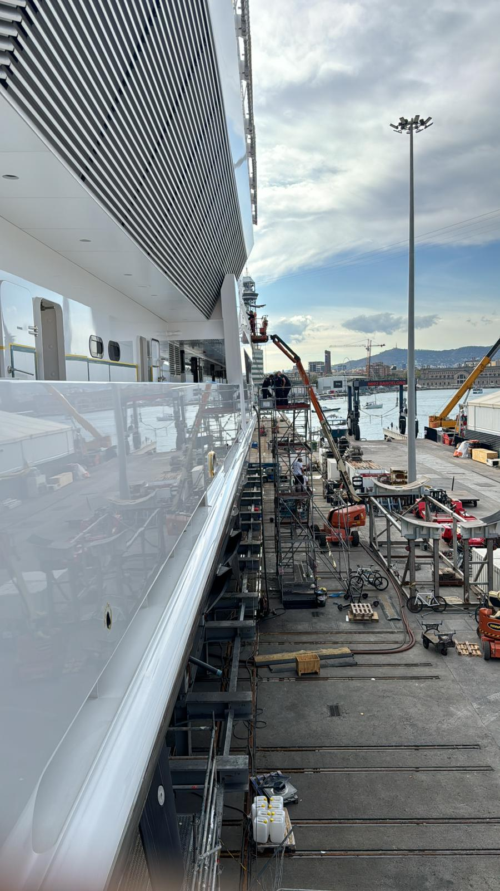

Before & After
Real surface transformation: from dull and oxidized to deep gloss and reflection.

Before

After
Luxury exterior yacht care specialized in polishing, gelcoat restoration, ceramic protection and high-end finishing for yachts and superyachts.
Instagram Request QuoteLuxxShine is focused exclusively on premium exterior yacht polishing and protection. We restore shine, depth and elegance to yacht surfaces with a luxury-level finish.
Professional gloss restoration and paint correction for exterior yacht surfaces.
Oxidation removal and correction for faded, tired or weathered surfaces.
Long-lasting protection designed to preserve shine and improve maintenance.
Premium visual preparation for yacht owners, brokers and marinas.
Real surface transformation: from dull and oxidized to deep gloss and reflection.
Before
After
Premium yacht surfaces, reflections and professional finishing.


Whether preparing a yacht for sale, delivery, charter season or private use, LuxxShine provides a premium exterior finish designed to increase visual value and preserve the elegance of every vessel.
Contact LuxxShine for premium yacht polishing and protection services.